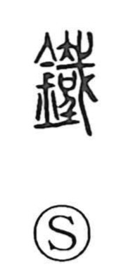

鉄

Uncategorized
Kun: kurogane | On: tetsu
iron ・ hard ・ strong
Explanation
Originally written 鐵, this is a phono-semantic character: the metal radical marks it as a metal, while the element read as tetsu (here identified with 戴) supplies the sound. The tradition also connects the graph with a sense of dark color—the word tetsu evokes the deep, reddish-black sheen likened to a black-chestnut horse. The Shuowen straightforwardly glosses it as kurogane, “iron.” From the nature of the substance itself, the character readily came to carry the associated ideas of hardness and strength.